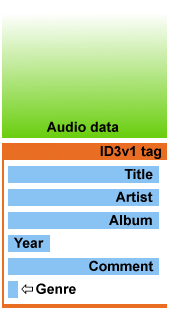
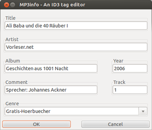
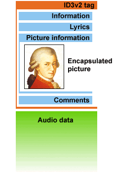

Überprüfung MP3-Sammlung
Zum Verständnis dieses Artikels sind folgende Seiten hilfreich:
Ein Programm ohne Menüeintrag starten, optional
Programme zum Menü hinzufügen, optional
Ein einzelnes Paket installieren, optional nur für mpck
Programme aus dem Quelltext übersetzen, optional nur für mpck
Einen Editor öffnen, optional nur Wiedergabeliste
Rechte für Dateien und Ordner ändern, optional nur Wiedergabeliste
 Mit den hier vorgestellten Programmen kann eine MP3-Sammlung überprüft werden, um gegebenenfalls fehlerhafte Dateien aufzuspüren. Dies geschieht auf unterschiedliche Art und Weise. Unter anderem können Metadaten wie ID3-Tags, Datenkompression, Dateninkonsistenzen und die Übereinstimmung mit dem MP3-Standard in den Audiodateien kontrolliert werden, um evtl. Fehler anzuzeigen und zu beheben. Allerdings besitzen nicht alle Programme eine Korrekturfunktion, manche dienen ausschließlich zur Diagnose. Die Programme können in ihrer Funktion aber auch kombiniert eingesetzt werden.
Mit den hier vorgestellten Programmen kann eine MP3-Sammlung überprüft werden, um gegebenenfalls fehlerhafte Dateien aufzuspüren. Dies geschieht auf unterschiedliche Art und Weise. Unter anderem können Metadaten wie ID3-Tags, Datenkompression, Dateninkonsistenzen und die Übereinstimmung mit dem MP3-Standard in den Audiodateien kontrolliert werden, um evtl. Fehler anzuzeigen und zu beheben. Allerdings besitzen nicht alle Programme eine Korrekturfunktion, manche dienen ausschließlich zur Diagnose. Die Programme können in ihrer Funktion aber auch kombiniert eingesetzt werden.
Da es sich in der Mehrzahl um Kommandozeilen-Programme handelt, lässt sich durch Angabe eines Ordners oder eines Platzhalters statt einer Einzeldatei auch eine größere Anzahl von Dateien schnell überprüfen. Wer eine grafische Programmoberfläche bevorzugt, findet diese bei MP3 Diags.
Programme¶
Nachfolgend eine alphabetische Liste ohne Wertung. Aus Gründen der Übersichtlichkeit sind die Programme in die beiden Abschnitte Audiodaten und ID3-Tags unterteilt, auch wenn sich einzelne Programme nicht so einfach eingruppieren lassen.
Achtung!
Vor einer Fehlerkorrektur sollte für den Notfall immer eine Sicherung der zu reparierenden Daten angelegt werden.
Audiodaten¶
|  |
Aufbau ID3v1  |
checkmp3¶
MP3 Check überprüft die Dateien nach dem MP3-Standard. Es analysiert fehlende Frames, erkennt fehlerhafte Header und kann Dateien reparieren.
In den offiziellen Paketquellen [1] ist das Programm unter dem folgende Paketnamen zu finden:
checkmp3 (universe, nur bis Ubuntu 12.04)
 mit apturl
mit apturl
Paketliste zum Kopieren:
sudo apt-get install checkmp3
sudo aptitude install checkmp3
Sollte es bei der Installation Probleme geben, kann man es auch im Ubuntu apps directory finden.
Zur Überprüfung einer Datei [2]:
checkmp3 foo.mp3
Reparatur:
checkmp3 -i -sf foo.mp3 > repariert-foo.mp3
| checkmp3 | |
| Parameter | Beschreibung |
-i | Überprüfung, ob ein ID3-Tag vorhanden ist (nur ID3v1) |
-p | Ausgabe in einer Zeile ausgeben |
-sf | Nur gültige Frames ausgeben (f) und auf die Standardausgabe schreiben (s). ID3-Tags werden entfernt, falls -i fehlt. |
In der Manpage des Programms ist eine vollständige Übersicht zu den Parametern hinterlegt.
mp3check¶
mp3check überprüft die Datenkonsistenz und gibt – je nach mitgegebenen Parametern – die gefundenen Fehler aus.
Das Programm ist in den Paketquellen [1] zu finden:
mp3check (universe)
mit apturl
Paketliste zum Kopieren:
sudo apt-get install mp3check
sudo aptitude install mp3check
Der Aufruf geschieht über das Terminal [2]:
mp3check --cut-junk-start foo.mp3
| mp3check | |
| Parameter | Beschreibung |
-3 | Nur MP3-Dateien untersuchen (nur in Kombination mit anderen Parametern) |
-e | Zyklische Redundanzprüfung |
--cut-junk-start | Entfernt Daten vor dem ersten (Audio-)Frame. Achtung: hiervon können u.a. ID3v2.x-Tags betroffen sein. |
--cut-junk-end | Entfernt Daten nach dem letzten Frame |
-S | Daten vor dem ersten Frame ignorieren (ID3v2.x-Tags bleiben erhalten) |
-B | VBR aktivieren |
Eine vollständige Übersicht zu den Parametern ist der Manpage zu entnehmen.
MP3 Diags¶
MP3 Diags hilft bei der Reparatur fehlerhafter MP3-Dateien. Unter anderem wird die Wiederherstellung von VBR-Dateien, die Korrektur der Spieldauer und die Entfernung von fehlerhaften MP3-Dateien unterstützt. Neben der Normalisierung von Audio-Dateien mit MP3Gain können Metadaten mit dem integrierten Editor bearbeitet und nach unterschiedlichen Kriterien sortiert werden. Im Gegensatz zu den anderen hier vorgestellten Programmen besitzt es eine grafische Oberfläche.
Das Programm ist außerordentlich vielseitig. Weitere Details sind im Artikel MP3 Diags zu finden.

MP3val¶
MP3val kann defekte Daten finden und reparieren. Für das Kommandozeilenprogramm gibt es mit mp3valgui noch eine kleine, in Python geschriebene grafische Oberfläche, die aber separat über die Projektseite heruntergeladen und manuell installiert werden muss. Einfacher gestaltet sich dagegen die Installation der alternativen GUI wxMP3val , die Fremdpakete für Ubuntu bereitstellt.
Zur Installation aus den Paketquellen [1] benötigt man das folgende Paket:
mp3val (universe)
mit apturl
Paketliste zum Kopieren:
sudo apt-get install mp3val
sudo aptitude install mp3val
Der Programmaufruf [2]:
mp3val foo.mp3 -foo.log -f
| MP3val | |
| Parameter | Beschreibung |
-l foo.log | Protokoll foo.log anlegen. Fehlt dieses Argument, wird die Ausgabe nachstdout ausgegeben. |
-f | Fehlerreparatur |
-p | Ausgabe in eine Pipe |
Eine vollständige Übersicht zu den Parametern findet man in der Manpage .
mpck¶
Checkmate mpck überprüft die Frames und Header von MP3-Dateien auf Konsistenz, um defekte Dateien zu identifizieren. Das Programm dient ausschließlich zur Diagnose, Reparaturen sind nicht möglich.
Zur Installation von der Projektseite das .deb-Paket herunterladen und manuell installieren [5].
Hinweis!
Fremdpakete können das System gefährden.
Alternativ kann man auch den Quelltext herunterladen und selbst kompilieren [6].
Zur Überprüfung einer Datei [2] wird das Programm über folgenden Befehl aufgerufen:
mpck foo.mp3
Damit werden Informationen zur MP3-Datei foo.mp3 ausgegeben. Um den kompletten eigenen Musikordner zu überprüfen und das Ergebnis in eine Datei fehlerhafte_mp3s.txt zu schreiben:
mpck -rB ~/Musik > fehlerhafte_mp3s.txt
| checkmp3 | |
| Parameter | Beschreibung |
-B | Lediglich defekte MP3-Dateien werden ausgegeben |
-R | Verzeichnisse werden rekursiv überprüft |
-r | nur MP3-Dateien überprüfen, aber rekursiv |
Die Manpage zum Programm gibt Aufschluss über die möglichen Fehlermeldungen und weitere Parameter.
VBRFix¶
Bei Dateien mit VBR (variable Bitrate) – das Gegenstück heißt CBR (constant Bitrate) – wird dynamisch komprimiert, wobei die Dateigröße direkt von der Komplexität der Daten abhängt (und damit im Regelfall kleinere Dateien als bei CBR ergibt). Dieses Verfahren wird beispielsweise bei Ogg standardmäßig eingesetzt.
Problematisch ist teilweise aber die Bestimmung der Abspieldauer von VBR-kodierten Musikdateien. Häufig kann diese im Voraus nicht exakt bestimmt werden, da sich aus der Dateigröße aufgrund der schwankenden Bitrate vor Kenntnis der konkreten Daten keine Zeitangabe berechnen lässt. Praktisch kann sich das in einer unsinnigen Anzeige bei der Länge der Musikstücks äußern.
VBRFix kann unter anderem den dafür verantwortlichen Xing VBR header neu erstellen.
Zur Installation wird folgendes Paket benötigt:
vbrfix (universe)
mit apturl
Paketliste zum Kopieren:
sudo apt-get install vbrfix
sudo aptitude install vbrfix
Über das Terminal [2] ruft man das Programm mit den gewünschten Parametern auf:
vbrfix foo.mp3 foo_neu.mp3
Die Originaldatei bleibt erhalten und eine neue foo_neu.mp3 wird erstellt.
| VBRFix | |
| Parameter | Beschreibung |
-ri1 | ID3v1-Tags entfernen |
-ri2 | ID3v2-Tags entfernen |
-always -makevbr | CBR in VBR umwandeln |
Weitere Parameter sind in der Manpage zu finden.
Beispiel¶
Diagnose mit mpck:
SUMMARY: Limp Bizkit & Eminem - Turn Me Loose.mp3
version MPEG v1.0
layer 3
average bitrate 23222 bps (VBR)
samplerate 8000 Hz
frames 11965
time 28:42.960
unidentified 3799 b (0%)
errors unidentified bytes
inconsistent frame headers
invalid header values
CRC error
result BadDie Datei enthält gleich mehrere Fehler:
Bitrate: 23222 bps entsprechen 23,2 kbps – normal wären mind. 128 kbps (bei CBR; damit ein Indiz für VBR)
Samplerate: viel zu niedrig – normal wären 44100 Hz
Dauer: fast 29 Min. lang – typischer VBR-Fehler
inkonsistente interne Strukturen (Frame Headers)
Prüfsummenfehler (CRC)
Nach der Reparatur mit MP3val:
SUMMARY: Limp Bizkit & Eminem - Turn Me Loose.mp3
version MPEG v1.0
layer 3
bitrate 128000 bps
samplerate 44100 Hz
frames 11972
time 5:12.737
unidentified 0 b (0%)
errors none
result OkID3-Tags¶
Speziell zur Kontrolle und Bearbeitung der Metadaten stehen alternativ mehrere Alternativen mit grafischer Oberfläche zur Verfügung, die auch den neueren Standard ID3v2.x unterstützen.
Experten-Info:
Von ID3v2.x existieren verschiedene Versionen. Zu der damit verbundenen Problematik siehe Metadaten.
eyeD3¶
eyeD3 ist ein Programm, mit dem ID3-Tags ausgelesen, bearbeitet und konvertiert werden können. Es unterstützt die Formate ID3 v1.0, v1.1, v2.3 und v2.4 – also alle derzeit relevanten Versionen.
Zur Installation wird folgendes Paket benötigt:
eyed3
mit apturl
Paketliste zum Kopieren:
sudo apt-get install eyed3
sudo aptitude install eyed3
Anschließend das Programm mit den gewünschten Parametern aufrufen [2]. Beispiel:
eyeD3 -v foo.mp3
foo.mp3 [ 1.23 MB ] ------------------------------------------------------------------------------- Time: 01:23 MPEG1, Layer III [ 320 kb/s @ 44100 Hz - Joint stereo ] ------------------------------------------------------------------------------- ID3 v2.3: title: foo artist: march album: bar year: 2011 ...
| eyeD3 | |
| Parameter | Beschreibung |
-h | Hilfe |
-v | Informationen zur MP3-Datei erhalten |
--to-v1.1 | ID3-Tag nach Version 1.1 konvertieren |
--to-v2.3 | ID3-Tag nach Version 2.3 konvertieren |
--artist=TEXT | Künstler setzen |
--album=TEXT | Albumname setzen |
--title=TEXT | Titel setzen |
--track=NUMMER | Titelnummer setzen |
--genre=TEXT | Genre setzen |
--add-image Cover.jpg:FRONT_COVER | Ein Albumcover hinzufügen |
--remove-images | Bilder entfernen |
--remove-all | Alle ID3-Tags der Versionen 1.x und 2.x entfernen |
--rename=NAME | Dateien umbenennen. Als Basis werden die Tags verwendet. Zur Verfügung stehen u.a. die Variablen: %A (Künstler), %t (Titel) und %n (Stücknummer) |
Weitere Optionen sind der Manpage zu entnehmen.
|  |
| MP3Info |
MP3Info¶
MP3Info erlaubt das Anzeigen und Bearbeiten von ID3-Tags in MP3-Dateien. Allerdings beherrscht das Programm nur den älteren Standard ID3v1, der keine Coverbilder unterstützt. Das Programm besitzt eine grafische Oberfläche (GUI), die bei Bedarf alternativ zur Kommandozeile genutzt werden kann.
Folgendes Paket muss installiert werden:
mp3info (universe)
mp3info-gtk (universe, optionale grafische Oberfläche)
mit apturl
Paketliste zum Kopieren:
sudo apt-get install mp3info mp3info-gtk
sudo aptitude install mp3info mp3info-gtk
Der Aufruf geschieht über das Terminal [2]:
mp3info -x foo.mp3
Zum Start der GUI [3] wird der Befehl gmp3info verwendet. Auf Wunsch kann ein Menüeintrag [4] vorgenommen werden.
| MP3Info | |
| Parameter | Beschreibung |
-x foo.mp3 | Anzeige der verfügbaren ID3-Tags von foo.mp3 |
-i foo.mp3 | foo.mp3 wird im Editor geöffnet |
-d | ID3-Tag löschen |
Die Manpage liefert eine vollständige Übersicht zu den Verwendungsmöglichkeiten der Kommandozeilenversion.
Hinweis:
Mit Strg + C wird der Editor beendet – jedoch werden die vorgenommenen Änderungen durch den Abbruch nicht gespeichert.
|  |
| Aufbau ID3v2 |
id3v2¶
Da der Nutzen von MP3Info für die eigenen Musikdateien heutzutage begrenzt ist, kommt id3v2 ins Spiel. Dieses Programm kann ID3v2-Tags anzeigen, hinzufügen, ändern oder entfernen sowie entsprechende Daten aus vorhandenen ID3v1-Tags erzeugen.
Folgendes Paket muss installiert werden:
id3v2 (universe)
mit apturl
Paketliste zum Kopieren:
sudo apt-get install id3v2
sudo aptitude install id3v2
Der Aufruf geschieht über das Terminal [2]:
id3v2 -l foo.mp3
zeigt die vorhandenen ID3-Tags an. Weitere Beispiele:
id3v2 -l *.mp3 |grep "No ID3v2 tag" |cut -d ":" -f1
überprüft, ob innerhalb eines Ordners Dateien ohne ID3-Tags enthalten sind. Der Befehl
id3v2 -a Interpret -A Albumname -t Titel -y Erscheinungsjahr foo.mp3
schreibt einige wichtige Eckdaten.
| id3v2 | |
| Parameter | Beschreibung |
-l | Anzeige vorhandener Tags |
-C | ID3v1 in ID3v2 konvertieren |
-s | ID3v1-Tags entfernen |
-d | ID3v2-Tags entfernen |
-D | alle ID3-Tags entfernen |
Die Manpage liefert eine vollständige Übersicht.
beets¶
beets ist eine relativ neue Anwendung für die Kommandozeile, die MusicBrainz zur Überprüfung der Metadaten einsetzt. Plugins erweitern die vorhandenen Möglichkeiten. Weitere Informationen liefern der Blogbeitrag Beets Music Tagger: Command Line Tool To Fix Metadata And Organize Your Music Library (01/2012) und die Dokumentation .
Folgendes Paket muss installiert werden:
beets (universe)
mit apturl
Paketliste zum Kopieren:
sudo apt-get install beets
sudo aptitude install beets
Wiedergabeliste¶
Um in größeren Musikbeständen Wiedergabelisten zu ergänzen oder zu entfernen empfiehlt es sich ein Skript zu verwenden. Nach gewünschtem Zweck den Code in einem Editor [7] einfügen, die Ausführrechte setzen [8] und m3ucreate.sh oder m3uremove.sh im Terminal [2] aufrufen z.B. über:
./m3ucreate.sh QUELLORDNER
Hinweis:
Die Verzeichnisse werden rekursiv durchsucht.
m3u erzeugen¶
m3ucreate.sh
1 2 3 4 5 6 7 8 9 10 11 12 13 14 15 16 17 18 19 20 21 | #!/bin/bash INPUTDIR="$1" cd "$INPUTDIR" INPUTDIR="$PWD" cd "$OLDPWD" filedir="" OLDIFS="$IFS" IFS=$'\n' for filepath in $(find $INPUTDIR -type f -name '*.mp3' -print | sort); do IFS="$OLDIFS" oldfiledir="$filedir" filedir="$(dirname "$filepath")" filename="$(basename "$filepath")" if [ "$oldfiledir" = "$filedir" ]; then echo $filename >> "$filedir/$(echo $filedir | awk -F/ '{ print $(NF-1) " - " $NF }').m3u" else rm -f "$filedir/$(echo $filedir | awk -F/ '{ print $(NF-1) " - " $NF }').m3u" echo $filename > "$filedir/$(echo $filedir | awk -F/ '{ print $(NF-1) " - " $NF }').m3u" fi done exit |
m3u entfernen¶
m3uremove.sh
1 2 3 4 | #!/bin/bash INPUTDIR="$1" find $INPUTDIR -type f -name '*.m3u' -delete exit |
Links¶

MP3 Check - nicht mit
mp3checkaus diesem Artikel identischCheckmate mpck
- weiteres Komandozeilenprogramm, nur DiagnosedupeGuru
- doppelte Dateien finden

- Erstellt mit Inyoka
-
 2004 – 2017 ubuntuusers.de • Einige Rechte vorbehalten
2004 – 2017 ubuntuusers.de • Einige Rechte vorbehalten
Lizenz • Kontakt • Datenschutz • Impressum • Serverstatus -
Serverhousing gespendet von